Unidad 3: Equilibrio de cuerpo rígido
Condiciones de equilibrio, ecuaciones de equilibrio, momento de una fuerza y restricciones
Contenido de la unidad
- 3.1 Condiciones de equilibrio de cuerpos rígidos
- 3.1.1 Fuerzas internas y externas
- 3.1.2 Principios de transmisibilidad
- 3.2 Ecuaciones de equilibrio
- 3.2.1 Ecuaciones para diferentes sistemas de fuerzas
- 3.2.2 Momento de una fuerza
- 3.2.3 Momento de una fuerza respecto a un eje
- 3.2.4 Sistemas equivalentes
- 3.3 Restricciones de un cuerpo rígido
3.1 Condiciones de equilibrio de cuerpos rígidos
Un cuerpo rígido está en equilibrio cuando la resultante de todas las fuerzas externas y la resultante de los momentos (respecto a cualquier punto) son nulas. Así se garantiza que no haya traslación ni rotación. Estas condiciones se expresan mediante las ecuaciones de equilibrio que veremos en la sección 3.2.
En esta sección desarrollaremos las condiciones necesarias y suficientes para lograr el equilibrio del cuerpo rígido que se muestra en la figura 5-1a. Este cuerpo está sometido a un sistema de fuerzas externas y momentos de par que es el resultado de los efectos de fuerzas gravitatorias, eléctricas, magnéticas o de contacto causadas por cuerpos adyacentes. Las fuerzas internas causadas por interacciones entre partículas dentro del cuerpo no se muestran en la figura porque estas fuerzas ocurren en pares colineales iguales pero opuestos y por consiguiente se cancelarán, lo cual es una consecuencia de la tercera ley de Newton.
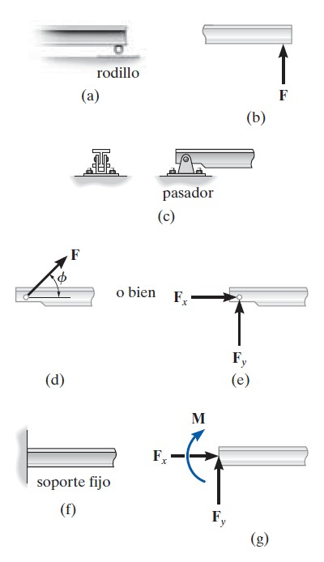
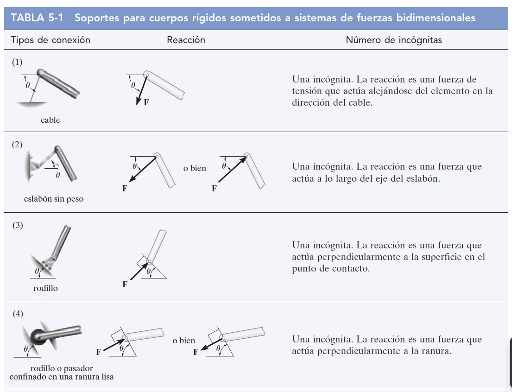
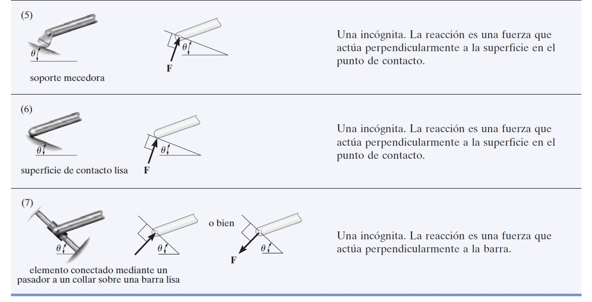
Ejercicio 3.1
Determine las componentes horizontal y vertical de la reacción en la viga, causada por el pasador en B y el soporte de mecedora en A, como se muestra en la figura.
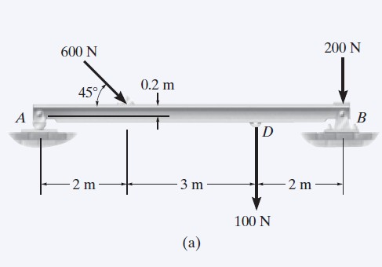
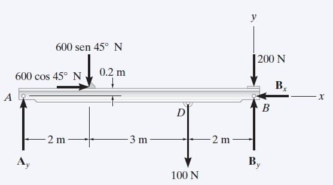
Ejercicio 3.2
La cuerda de la figura 5-13a soporta una fuerza de 100 lb y se enrolla sobre la polea sin fricción. Determine la tensión en la cuerda en C y las componentes horizontal y vertical de reacción en el pasador A.
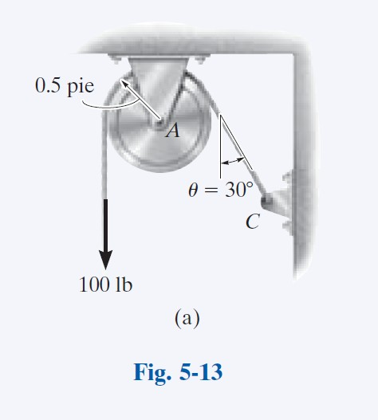
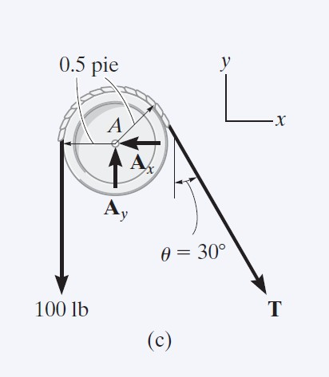
Ejercicio 3.3
El elemento que se muestra en la figura 5-14a está articulado en A y descansa contra un soporte liso ubicado en B. Determine las componentes horizontal y vertical de reacción en el pasador A.
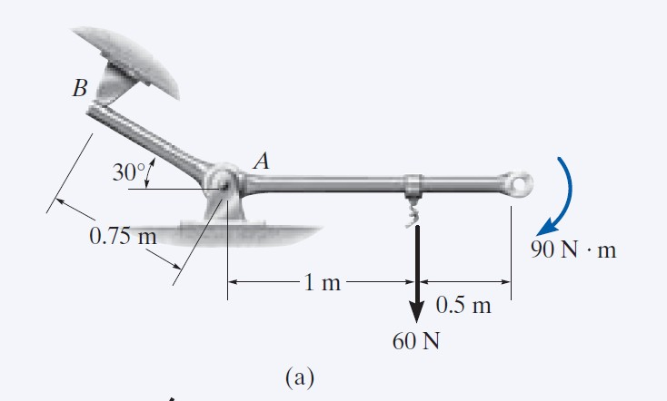
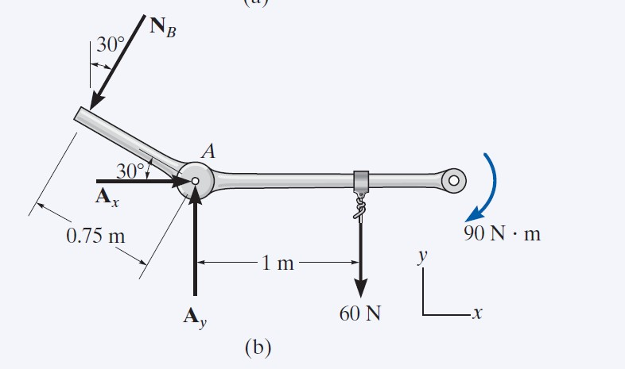
Ejercicio 3.4
Trace el diagrama de cuerpo libre del pedal que se muestra en la figura 5-8a. El operador aplica una fuerza vertical al pedal de manera que el resorte se estira 1.5 pulg y la fuerza en el eslabón corto en B es de 20 lb.
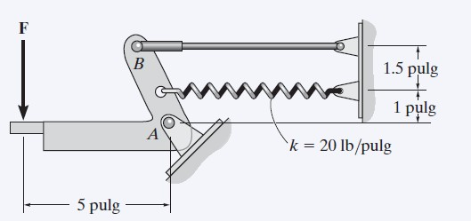
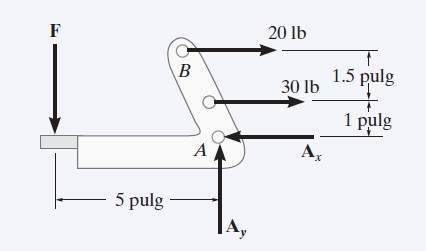
3.1.1 Fuerzas internas y externas
Las fuerzas externas son las que ejercen otros cuerpos o el medio sobre el cuerpo en estudio (peso, reacciones, tensiones). Las fuerzas internas son las que mantienen unidas las partículas del cuerpo; en un cuerpo rígido ideal no provocan cambio en el movimiento. Para el equilibrio solo se consideran las fuerzas externas en el diagrama de cuerpo libre.
Video 3.1.1
3.1.2 Principios de transmisibilidad
El principio de transmisibilidad establece que el efecto de una fuerza sobre un cuerpo rígido no cambia si la fuerza se desplaza a lo largo de su línea de acción. Esto permite simplificar el diagrama de cuerpo libre y la aplicación de las condiciones de equilibrio sin alterar el resultado.
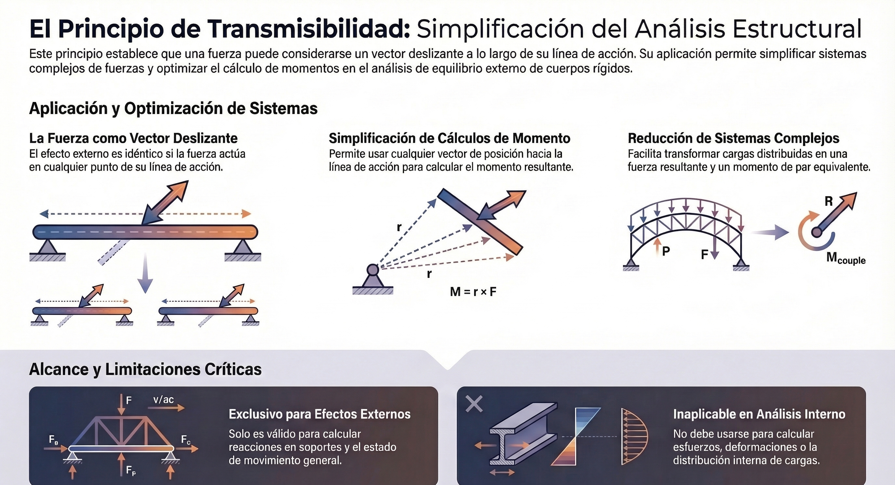
El principio de transmisibilidad es un concepto fundamental en la estática que establece que las condiciones de equilibrio o de movimiento de un cuerpo rígido permanecerán inalteradas si una fuerza F que actúa en un punto dado es reemplazada por otra fuerza de igual magnitud, dirección y sentido, siempre que esta última actúe en un punto diferente situado sobre la misma línea de acción.
Para comprender este principio desde una perspectiva académica profunda, debemos considerar los siguientes puntos clave:
- Clasificación de la fuerza como vector deslizante: En el análisis de cuerpos rígidos, este principio nos permite tratar a la fuerza como un vector deslizante. A diferencia de una partícula, donde el punto de aplicación es único, en un sólido podemos deslizar la fuerza a lo largo de su trayectoria lineal sin modificar los efectos externos sobre el cuerpo.
- Justificación mediante el momento de una fuerza: Matemáticamente, el principio se sostiene porque el momento de una fuerza respecto a un punto específico O es el mismo, independientemente de dónde se aplique la fuerza a lo largo de su línea de acción. Al realizar la operación de producto cruz MO = r × F, se puede utilizar cualquier vector de posición r que se dirija desde O hacia cualquier punto sobre la línea de acción de F, obteniendo siempre el mismo vector momento.
- Efectos externos vs. internos: Es imperativo distinguir que este principio es válido exclusivamente para el estudio de los efectos externos, tales como las fuerzas de reacción en los soportes o el movimiento de traslación y rotación del cuerpo. Por el contrario, si el interés del análisis son los esfuerzos internos o las deformaciones del material, el punto exacto de aplicación de la carga es determinante y el principio de transmisibilidad no debe emplearse.
- Aplicación práctica en el equilibrio: Esta propiedad simplifica enormemente la resolución de problemas estructurales, permitiendo, por ejemplo, trasladar una fuerza resultante a puntos donde su línea de acción interseca elementos específicos de una estructura para facilitar el cálculo de equilibrio.
Un ejemplo ilustrativo presentado en la literatura técnica es el de una varilla sujeta a una fuerza en un punto A. Si añadimos un par de fuerzas iguales y opuestas en un punto B sobre la misma línea de acción, observaremos que el efecto neto (la reacción en el agarre de la varilla) es idéntico al de haber aplicado la fuerza original directamente en B, demostrando que la ubicación exacta en la línea de acción no altera la estabilidad global del sistema.
3.2 Ecuaciones de equilibrio
Para un cuerpo rígido en el plano, las condiciones de equilibrio se reducen a tres ecuaciones escalares independientes: suma de fuerzas en x igual a cero, suma de fuerzas en y igual a cero, y suma de momentos respecto a un punto igual a cero. En el espacio (3D) se tienen seis ecuaciones (tres de fuerzas y tres de momentos).
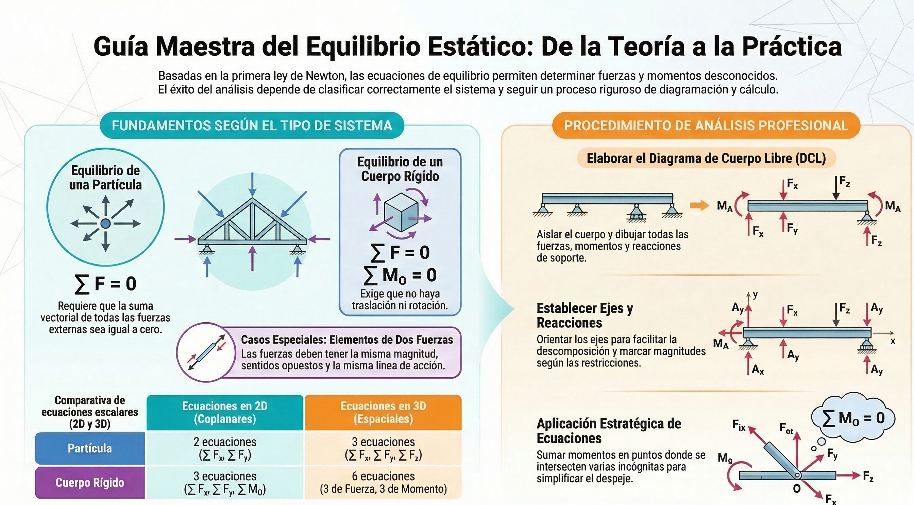
3.2.1 Ecuaciones de equilibrio para diferentes sistemas de fuerzas
Según el tipo de sistema de fuerzas (concurrentes, paralelas, general coplanares, etc.), algunas ecuaciones pueden satisfacerse automáticamente o reducir el número de incógnitas que se pueden determinar. Es importante identificar el sistema para plantear solo las ecuaciones necesarias.
Determine la longitud requerida para el cable de corriente alterna de la figura 3-8a, de manera que la lámpara de 8 kg esté suspendida en la posición que se muestra. La longitud no deformada del resorte AB es l'AB = 0.4 m, y el resorte tiene una rigidez de kAB = 300 N/m.
La caja de 200 kg que se muestra en la figura 3-7a está suspendida por las cuerdas AB y AC. Cada cuerda puede soportar una fuerza máxima de 10 kN antes de que se rompa. Si AB siempre permanece horizontal, determine el ángulo mínimo θ al que se puede suspender la caja antes de que una de las cuerdas se rompa.
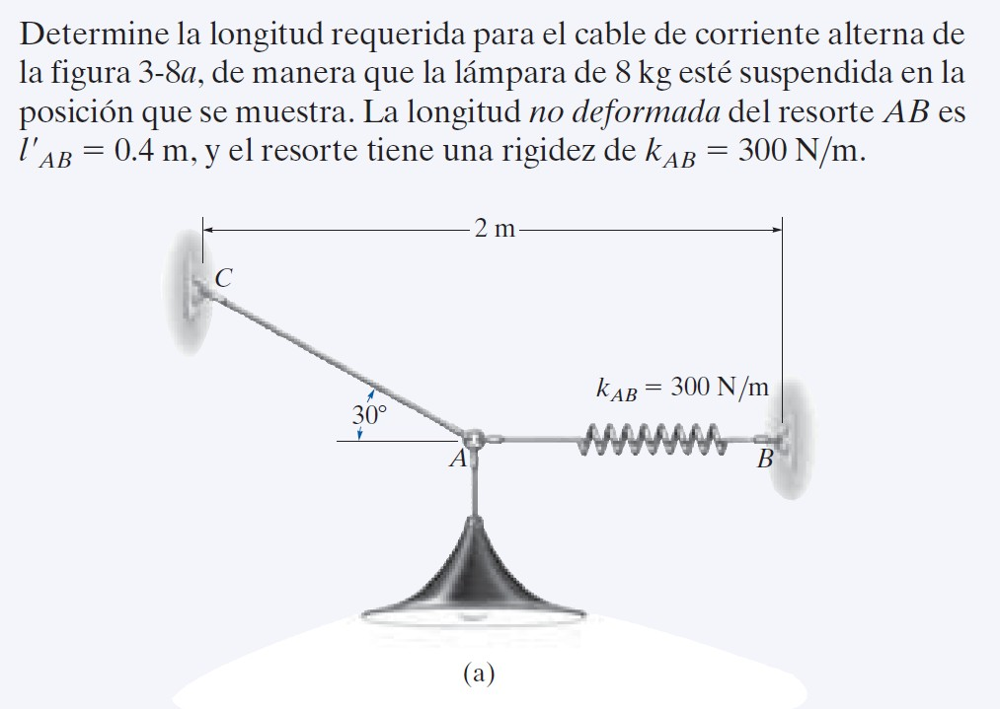
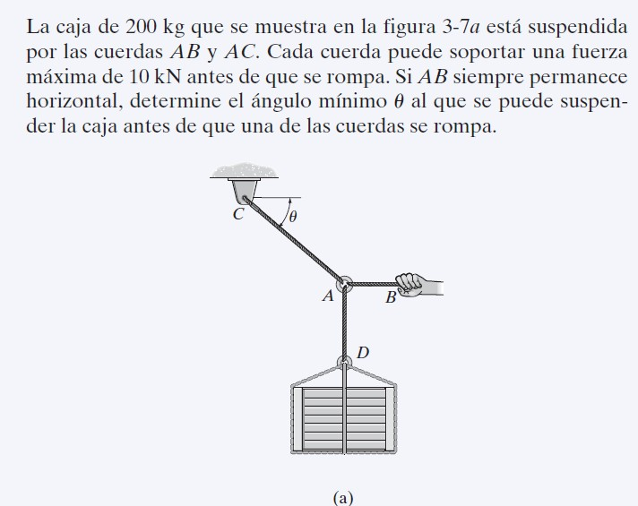
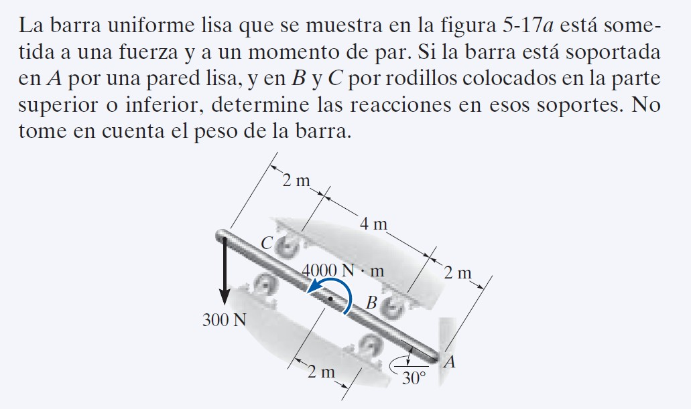
Video 3.1
3.2.2 Momento de una fuerza
El momento de una fuerza respecto a un punto O es una magnitud vectorial que mide la tendencia de la fuerza a producir rotación alrededor de O. Su módulo es M = F·d, donde d es la distancia perpendicular desde O hasta la línea de acción de la fuerza. La dirección del momento es perpendicular al plano que contiene a O y a la fuerza (regla de la mano derecha).
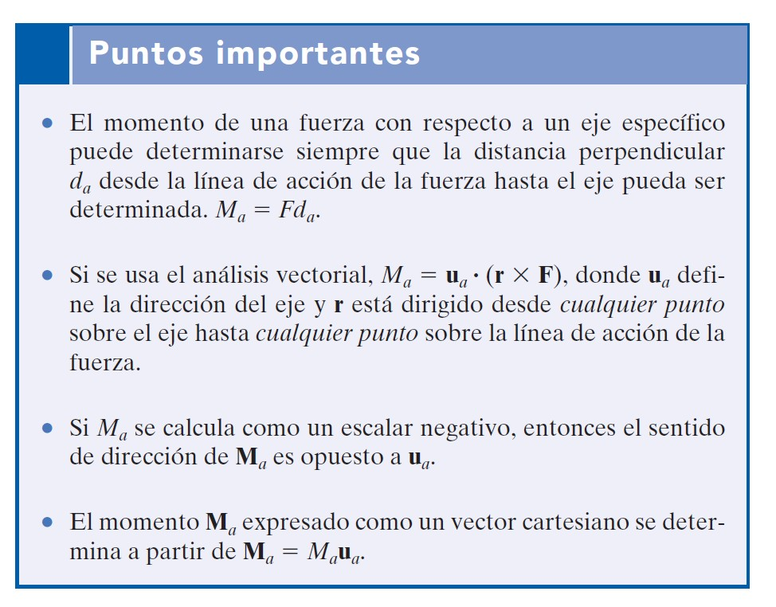
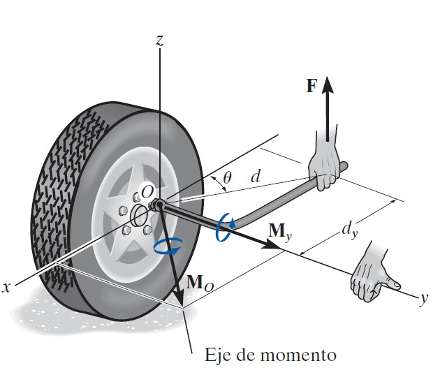
3.2.3 Momento de una fuerza respecto a un eje
El momento de una fuerza respecto a un eje (por ejemplo, el eje z) es la componente del momento (respecto a un punto del eje) en la dirección de ese eje. Solo la componente de la fuerza que tiende a girar el cuerpo alrededor del eje contribuye al momento respecto al eje.
Propuesta técnica: marco conceptual y metodológico para el análisis de sistemas de fuerzas en estática
Esta propuesta formaliza los principios angulares de la estática de partículas y cuerpos rígidos, integrando conceptos de transmisibilidad, equilibrio y momentos bajo estándares técnicos de la ingeniería mecánica.
1) Fundamentación del principio de transmisibilidad
En cuerpos rígidos, las condiciones de equilibrio o de movimiento permanecen inalteradas si una fuerza se reemplaza por otra de igual magnitud y dirección sobre la misma línea de acción. Bajo este principio, la fuerza se modela como vector deslizante, simplificando la formulación de momentos sin alterar los efectos externos.
2) Metodologías para el análisis del momento de una fuerza
El momento cuantifica la tendencia de rotación respecto a un punto o eje. Para su aplicación profesional se distinguen:
- Formulación vectorial (punto específico): MO = r × F, donde r es el vector de posición desde el origen al punto en la línea de acción.
- Momento respecto a un eje: Ma = ua · (r × F), con ua como vector unitario en la dirección del eje de proyección.
3) Condiciones y ecuaciones de equilibrio
- Equilibrio de partícula: requiere ∑F = 0.
- Equilibrio de cuerpo rígido: exige simultáneamente ∑F = 0 y ∑MO = 0.
- En sistemas tridimensionales, se disponen seis ecuaciones escalares independientes.
4) Procedimiento general para el análisis de ingeniería
- Idealización del modelo: selección de soportes y dimensiones representativas.
- Diagrama de cuerpo libre (DCL): aislamiento del cuerpo e identificación de fuerzas y momentos externos.
- Ejecución matemática: aplicación de ecuaciones dimensionalmente homogéneas con control de resultados intermedios.
- Expresión de resultados: presentación final con tres cifras significativas y juicio técnico de razonabilidad.
5) Conclusión
El dominio de estos principios permite transformar descripciones físicas complejas en modelos simbólicos precisos, asegurando estabilidad, seguridad y solidez técnica en el diseño de elementos mecánicos y estructuras.
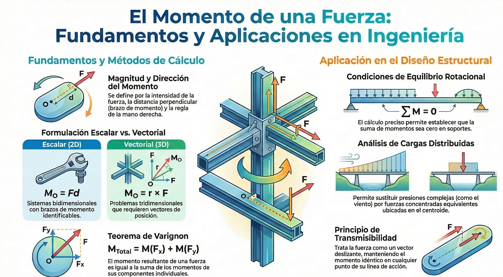
Ejercicio No 1 (p141)
Determine el momento resultante de las tres fuerzas que se muestran en la figura 4-22 con respecto al eje x, al eje y y al eje z.
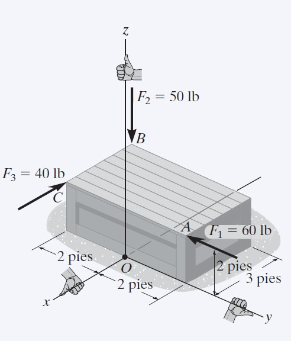
3.2.4 Sistemas equivalentes (p148)
Dos sistemas de fuerzas son equivalentes si tienen la misma resultante y el mismo momento resultante respecto a un punto. Esto permite reemplazar un sistema complejo por uno más simple (por ejemplo, una fuerza única y un par) para facilitar el análisis del equilibrio.
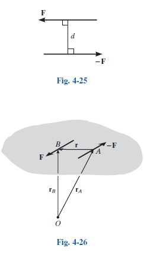
3.3 Restricciones de un cuerpo rígido
Las restricciones (apoyos, conexiones, empotramientos) limitan los grados de libertad del cuerpo y generan reacciones que aparecen en las ecuaciones de equilibrio. Según el tipo de apoyo (rótula, rodillo, empotramiento, etc.) se conocen las direcciones o valores de las reacciones, lo que permite plantear un sistema de ecuaciones con igual número de incógnitas para resolver el problema.
Problemas a Resolver
Ejercicios para practicar condiciones de equilibrio de cuerpos rígidos, momentos y restricciones. (Añade aquí imágenes o enlaces a ejercicios cuando los tengas.)
Próximamente: ejercicios de la Unidad 3